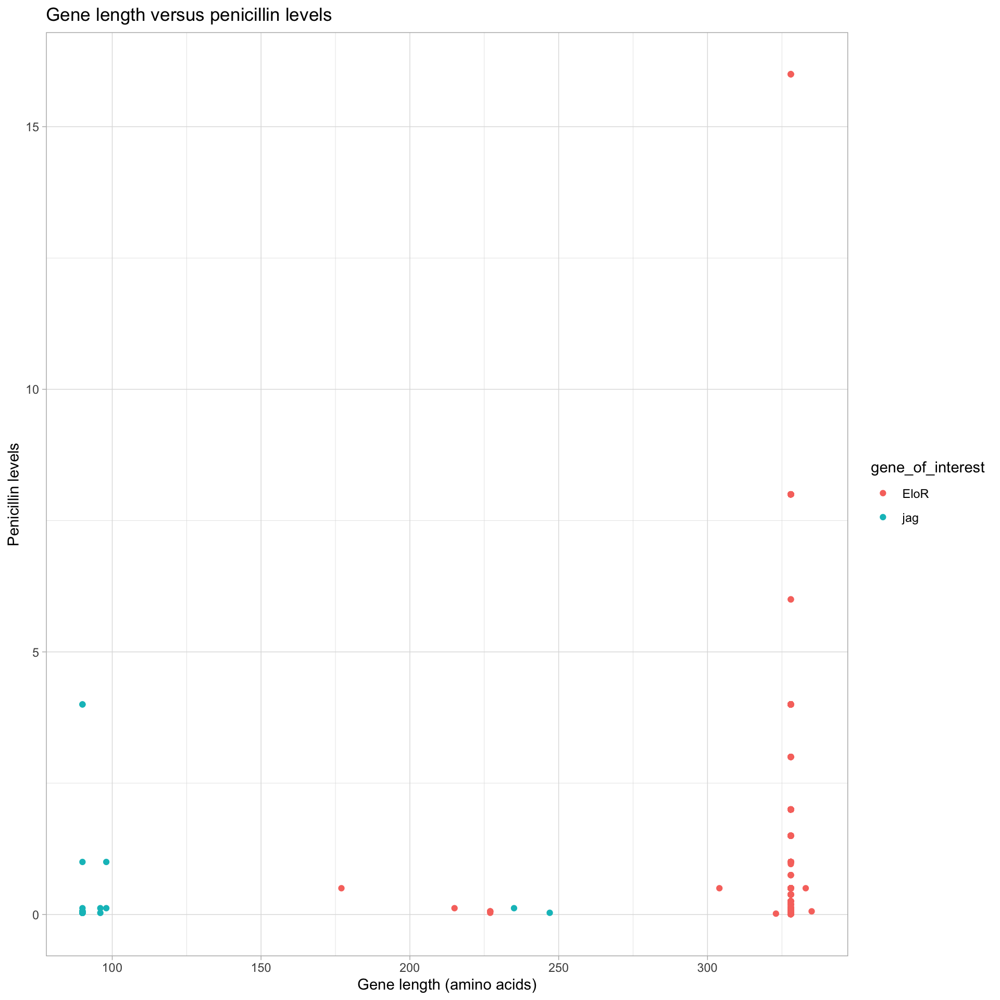

Sequences of interest
Overview
In this analysis, we investigate specific genes of interest identified by our colleagues at NMBU. One protein of particular interest is KhpB, which has been found to have a correlation with pbp2b, a protein is known to play a role in increasing MICS.
To understand the impact of different variants of KhpB on MIC, we created a BLAST (Basic Local Alignment Search Tool) database for EloR and searched all of our isolates against it. Next we extracted the matches and the gene length of the match in the respective assemblies.
KhpB sequence length and MIC
As seen in Figure 1, there is no apparent correlation between the gene length of KhpB and the observed penicillin MIC. In fact, we see that most of the high MIC levels is observed around the normal gene length (approximately 986 base pairs).
KhpB amino acid length and MIC
Next we searched directly for the protein “KhpB” in the annotated assemblies and inspected the length of the amino acid sequence. For example, if the amino acid sequence of any was significantly shorter than the typical distribution length, it may suggest a potential correlation with increased MIC.
In 26 of the annotated assemblies, KhpB was split and the first domain of the KhpB protein was annotated as “jag”.
Figure 2 shows that most of the high penicillin resistance levels are in the KhpB annotations. Next we look at the gene length:

Figure 3 shows that most of the high penicillin resistance levels are observed for normal length variants of the KhpB protein. Most of the high MIC isolates have 328 amino acids in KhpB.
Summary
In this analysis, we studied specific genes of interest identified by our colleagues at NMBU, focusing on the protein KhpB and its correlation with pbp2b, a protein known to play a role in increasing Minimum Inhibitory Concentration (MIC). We set up a BLAST database for eloR, extracted matches and the gene length of the match in the respective assemblies, and searched for the protein “KhpB” in annotated assemblies to inspect the length of the amino acid sequence. Our results showed that there is no clear relationship between the gene length of KhpB and the observed penicillin MIC, and most of the high MIC levels were observed around the normal gene length. Additionally, we found that most of the high penicillin resistance levels were in the KhpB annotations, with most high MIC isolates having 328 amino acids in KhpB.